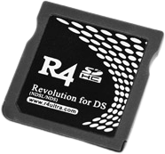

Description
R4 SDHC & R4i Ultra are SLOT-1 flashcards for the Nintendo DS series consoles (the R4i supports DSi and 3DS). They're the same size as an original game cartridge. R4 Ultra cards are an upgraded version of R4. They supports SDHC, have multi-media features, and can run most games and homebrews.
Additional Informations
The R4 SDHC Ultra is an Acekard2 clone, while the R4i is an Acekard2i one.
Features
- Support SDHC memory cards (compatibility up to 32GB)
- Change menu language as you want without any limit
- Same size and thickness as an original card
- No need to flash. Build-in launch Slot-2 (gba) function
- Support DMA read and no lag when using any microSD card
- Support FAT16 and FAT32 formats. Can transfer files with PC, PDA, Cellphone and Camera
- Support drag-drop to play, with fast loading
- Support NDS games
- Write save files to TF card directly and no need manual backup or restore them
- Auto save type detection and no need to update save type list database
- Support moonshell and homebrews
- Power saving design. Enter optimization mode automatically
- Double screen UI. Support display thumbnails of games
- Easy to use and setting
- Support both button and touch operation
- Support Wi-Fi, rumble package and browser expansion
- Support changing menu background picture
- Support changing menu font color
- Support brightness adjustments (DS Lite only)
- Support soft-reset
- Support AR cheat code
- Support moonshell 1.6 soft-reset (back to main menu of R4 Ultra)
- Support DLDI auto-patching
- Support Download play
This team has released two flashcards, choose which one you have.
|  |  |
| R4 SDHC Ultra | R4i Ultra |